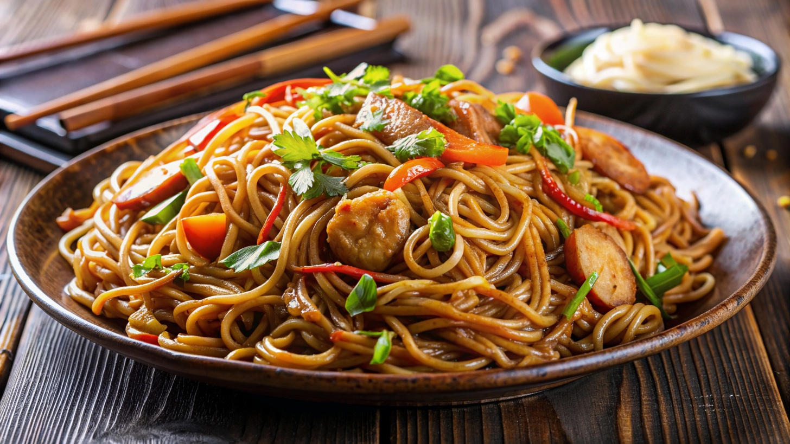

Yakisoba

Description
Yakisoba is a Japanese dish that consists of stirred pasta with some
vegetables and mushrooms mixed into it.
Ingredients
- 1/2 teaspoon sesame oil
- 1 tablespoon canola oil
- 2 tablespoons chile paste
- 2 cloves garlic, chopped
- 4 skinless, boneless chicken breast halves - cut into 1 inch cubes.
- 1/2 cup soy sauce
- 1 onion, sliced lengthwise into eighths
- 1/2 medium head cabbage, coarsely chopped
- 8 ounces soba noodles, cooked and drained
Steps
- In a lagre skillet combine sesame oil and chili paste; stir-fry 30
seconds. Add garlic and stir fry an additional 30 secconds. Add chichen
and 1/4 cup of the soy sauce and stir fry until chicken is no longer
pink, about 5 minutes. Remove mixture from pan, set aside, and
keep warm.
- In the emptied pan combine the onion, cabbage, and carrots. stir-fry
until cabbage begins to wilt, 2 to 3 minutes. Stir in the remaining soy
sauce, cooked noodles, and the chicken mixture to pan and mix to blend.
Serve and enjoy!
Home Page